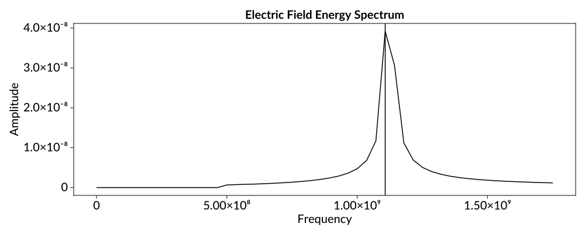
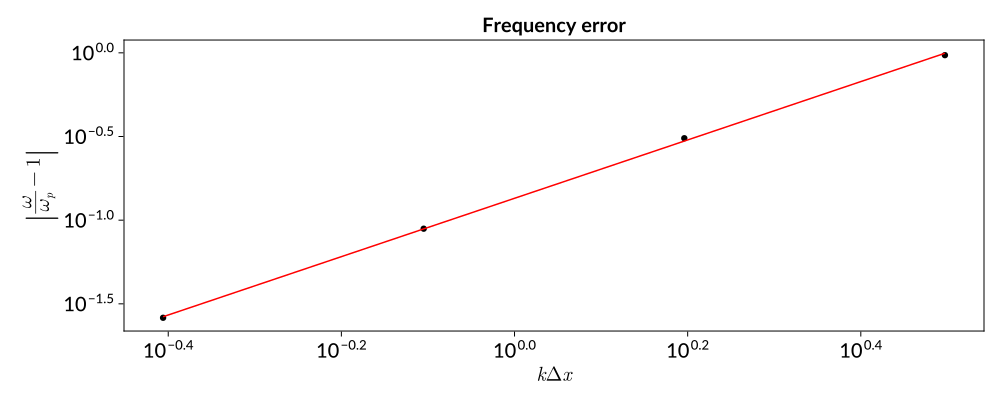

Tutorial: Langmuir oscillations


In this tutorial, you will use ParticleInCell to model one of the simplest phenomena in plasma physics: an electrostatic (or Langmuir) oscillation. This tutorial is part of a series of examples that uses ParticleInCell to demonstrate the basic plasma physics concepts that are covered in Birdsall and Langdon's classic PIC textbook.
A Langmuir oscillation occurs when a slab of charge in a uniform plasma is displaced. The resulting charge density gradient creates a restoring force that causes the displaced slab of charge to return to its original position. But–-just as in a classical pendulum oscillation–-the momentum of the charge carries it past its equilibrium point, creating an opposite charge gradient, and a restoring force in the opposite direction. As a result, the slab of charge oscillates around its equilibrium forever (at least in this idealized model that ignores possible damping mechanisms). For a plasma composed of a single mobile species $s$ with mass $m_s$ and charge $q_s$, the frequency of this oscillation is given by
\[\omega_{p,s} = \sqrt{\frac{n_s q_s^2}{\epsilon_0 m_s}}\]
where $n_s$ is the number density of the plasma and $\epsilon_0$ is the permitivity of free space. Notice that the plasma frequency has a $m_s^{-1/2}$ dependence, and thus the lightest species (typically electrons) will dominate the dynamics of a plasma oscillation. For this reason, we will only model the dynamics of the electrons in our simulation.
Simulating a cold electron plasma
We begin by loading the ParticleInCell package. Additionally, we load CairoMakie which is a backend for Makie that can generate beautiful, publication-quality graphics.
using ParticleInCell
using CairoMakie
docs_theme = Theme(
fontsize = 20,
fonts = (; regular = "Lato", bold = "Lato Bold"),
palette = (color = [:black, :red, :blue],),
Axis = (xgridvisible = false, ygridvisible = false),
Scatter = (; cycle = [:color]),
Lines = (; cycle = [:color]),
)We begin by creating some electrons to move in the simulation. For even a tiny simulation volume, there are far too many physical electrons to simulate each one individually. Instead, PIC algorithms group physical particles into 'macroparticles'. The distribution of macroparticles in phase space serves as an approximation for the phase space distribution of physical particles. We arbitrarily choose a simulation domain of length one, and a nominal electrons number density of $10^{14}$. Then, for a given number of macroparticles, we can calculate the number of physical electrons represented by each.
sim_length = 1.0
number_density = 1e14
num_macroparticles = 320
particles_per_macro = number_density * sim_length / num_macroparticles3.125e11We distribute the macroparticles evenly across the simulation domain.
positions = collect(0:num_macroparticles-1) ./ num_macroparticles;In order to seed a Langmuir oscillation, we give the electrons a sinusoidal velocity perturbation. This corresponds to the moment in a Langmuir oscillation when the slab of charge has reached equilibrium, but is being carried past by its momentum. This perturbation is defined by a wavenumber k and an amplitude.
k = 1 * 2pi / sim_length
amplitude = 1e3
elec_mass = 9e-31
momentums = (particles_per_macro * elec_mass * amplitude) .* sin.(positions .* k);We can visualize the initial condition of the electron macroparticle by plotting the initial phase space.
fig = Figure(size = (1000, 400))
ax = Axis(
fig[1, 1],
title = "Electron phase space",
xlabel = "Position (m)",
ylabel = "Momentum (arb. units)",
limits = ((0, 1), nothing),
)
scatter!(ax, positions, momentums ./ maximum(momentums))
fig
Finally, we create a VariableWeightSpecies which holds the all of the macroparticles. Additionally, we must pass the value of particles_per_macro, which is used to calculate the charge and mass of the macroparticles.
electrons = ParticleInCell.electrons(positions, momentums, particles_per_macro);Now we address the 'cell' piece of particle-in-cell by creating a grid. Because Langmuir oscillations are a one-dimensional phenomena, we will choose to perform a 1D simulation.
The choice of grid resolution is determined by the scale of the smallest relevant dynamics begin simulated. For a Langmuir oscillation, the scale of the dynamics is set by k, and so the simulation could likely accomplished with as few as 4 or 8 cells. However, this is not a computationally demanding simulation, and so we arbitrarily choose to use 32 equally spaced (i.e. uniform) grid points. Additionally, we make the simulation domain periodic.
num_cells = 32
dx = sim_length / num_cells
periodic = true
grid = UniformCartesianGrid((0.0,), (sim_length,), (num_cells,), (periodic,));At this point, we must choose a timestep for the simulation. We would like to use a large timestep so that more of the systems dynamics can be observed with the same number of steps. However, we must resolve the fastest timescale of the dynamics that we are trying to simulate. In this case, we must resolve the plasma frequency. Additionally, we must choose a timestep that is short enough that particles do not cross more than one cell per timestep to prevent numerical instabilities from arising. For the oscillation amplitude that we have chosen, the particles do not move fast enough for the CFL condition to matter, and so we will choose our timestep based on the expected plasma frequency.
epsilon_0 = 8.8e-12
elec_charge = 1.6e-19
elec_mass = 9e-31
expected_plasma_freq = sqrt(number_density * elec_charge^2 / elec_mass / epsilon_0)
expected_plasma_period = 2pi / expected_plasma_freq1.1051531770007306e-8In order for the simulation to be accurate, there must be several timesteps per plasma period (or equivalently, several timesteps per inverse plasma frequency). For now, we will arbitrarily choose to have 100 timesteps per plasma period, and later, we will explore how changing the time step effects the accuracy of the simulation.
dt = 0.01 / expected_plasma_freq1.7589059099337862e-11Now we need to set up the fields required for the electrostatic PIC simulation, as well as specify the exact steps that will occur during each step.. To do this, we will use a helper function to create the fields and steps.
sim, fields = create_electrostatic_simulation(grid, [electrons], dt);The variable sim holds the steps, and fields is a named tuple of the rho, phi, and electric fields (actually two electric fields, one at the edge of each grid cell, and one at the nodes). In this tutorial, we won't go over the details of the PIC method, but you can find more details in the theory section of the manual. However, we will need the nodal electric field later in the tutorial, so we assign that field to its own variable.
Enode = fields[:Enode];Now we are ready to run the simulation. We will simulate the plasma for 1000 timesteps, and at each step, we will calculate the electric field energy,
\[U_E = \int |E(x)|^2 \,\mathrm{d}x.\]
This field energy will oscillate as the electrons move in and out of equilibrium, and so we can use it to observe the Langmuir oscillation.
n_steps = 10000
electric_field_energy = Vector{Float64}(undef, n_steps)
for n = 1:n_steps
# Calculate the electric field energy
electric_field_energy[n] = 0
for I in eachindex(Enode)
electric_field_energy[n] += (dx * epsilon_0 / 2) * (Enode.values[I])^2
end
step!(sim)
endWe can now visualize the electric field energy to see the plasma oscillation.
normalized_times = collect(range(1, n_steps)) .* dt .* expected_plasma_freq
fig = Figure(size = (1000, 400))
ax = Axis(
fig[1, 1],
title = "Electric Field Energy",
xlabel = "Normalized Time",
ylabel = "Energy",
limits = ((0, 100), nothing),
)
lines!(normalized_times, electric_field_energy)
fig
Notice that the electric field energy is slowly growing over time, which is unphysical. We will discuss where this numerical instability comes from– and how it can be avoided–later. But for now, we can still use the electric-field-energy time series to calculate the plasma frequency. First, let's plot the Fourier transform of the electric field energy.
using FFTW
freqs = fftfreq(n_steps, 1 / dt) .* 2pi
freq_amps = abs.(fft(electric_field_energy))
fig = Figure(size = (1000, 400))
ax = Axis(
fig[1, 1],
title = "Electric Field Energy Spectrum",
xlabel = "Frequency",
ylabel = "Amplitude",
)
lines!(ax, freqs, freq_amps)
fig
It is hard to see what is happening at the low frequencies, so let's zoom in on the positive low frequencies.
cutoff_index = round(Int, n_steps * 0.005)
fig = Figure(size = (1000, 400))
ax = Axis(
fig[1, 1],
title = "Electric Field Energy Spectrum",
xlabel = "Frequency",
ylabel = "Amplitude",
)
lines!(ax, freqs[1:cutoff_index], freq_amps[1:cutoff_index])
fig
Next, we find the maximum frequency. We don't care about the spike at zero frequency (that is just a consequence of the electric field energy being a strictly positive quantity) so we will zero out all of the frequencies below $5 \times 10^8$ Hz. We then find the largest remaining amplitude, and it's corresponding frequency.
freq_amps .= ifelse.(freqs .< 5e8, 0, freq_amps)
max_index = findmax(freq_amps)[2]
max_freq = freqs[max_index]
# Divide by 2 because the electric field energy goes through a maximum twice
# per plasma oscillation, and take the absolute value because we don't care
# about the phase of the oscillation.
measured_plasma_freq = abs(max_freq / 2)5.5369290484077e8One last plot, showing the zeroed out low frequencies, and the measured oscillation frequency:
fig = Figure(size = (1000, 400))
ax = Axis(
fig[1, 1],
title = "Electric Field Energy Spectrum",
xlabel = "Frequency",
ylabel = "Amplitude",
)
lines!(ax, freqs[1:cutoff_index], freq_amps[1:cutoff_index])
vlines!(ax, [measured_plasma_freq * 2])
fig
Finally, we can compare this to the theoretically expected result:
relative_error = (measured_plasma_freq - expected_plasma_freq) / expected_plasma_freq-0.026106277387164183Less than a 5% error.
Scaling of frequency error with wavenumber
In the previous section, we seeded a plasma oscillation that spanned the entire simulation domain. That is, the wavenumber was
\[k_\text{min} = \frac{2 \pi}{\lambda} = \frac{2 \pi}{L}.\]
This is the best possible case, because the oscillation spans as many grid cells as possible. However, as the wavenumber increases (and equivalently, the wavelength decreases), the finite grid effects will start to become more important, and they will result in an increased error in the measured plasma frequency.
Our goal in this section will be to observe and quantify this finite grid error. We begin by defining a function that will run a PIC simulation at a specified wavenumber, and return the measured plasma frequency.
function measure_plasma_frequency(number_density, wavenumber, normalized_timestep = 0.01)
sim_length = 1.0
num_cells = 32
dx = sim_length / num_cells
num_macroparticles = 10 * num_cells
particles_per_macro = number_density * sim_length / num_macroparticles
perturb_amplitude = 1e3
elec_mass = 9e-31
positions = collect(0:num_macroparticles-1) ./ num_macroparticles
momentums =
(particles_per_macro * elec_mass * perturb_amplitude) .*
sin.(positions .* wavenumber)
electrons = ParticleInCell.electrons(positions, momentums, particles_per_macro)
grid = UniformCartesianGrid((0.0,), (sim_length,), (num_cells,), (true,))
epsilon_0 = 8.8e-12
elec_charge = 1.6e-19
expected_plasma_freq = sqrt(number_density * elec_charge^2 / elec_mass / epsilon_0)
dt = normalized_timestep / expected_plasma_freq
sim, fields = create_electrostatic_simulation(grid, [electrons], dt)
Enode = fields[:Enode]
# We want to simulate the same length of physical time for each simulation,
# so we need to have more steps when the timestep is shorter.
n_steps = round(Int, 100 / normalized_timestep)
electric_field_energy = Vector{Float64}(undef, n_steps)
epsilon_0 = 8.8e-12
for n = 1:n_steps
# Calculate the electric field energy
electric_field_energy[n] = 0
for I in eachindex(Enode)
electric_field_energy[n] += (dx * epsilon_0 / 2) * (Enode.values[I])^2
end
step!(sim)
end
freqs = fftfreq(n_steps, 1 / dt) .* 2pi
freq_amps = abs.(fft(electric_field_energy))
freq_amps[1] = 0
max_index = findmax(freq_amps)[2]
max_freq = freqs[max_index]
plasma_freq = abs(max_freq / 2)
return plasma_freq
end;Let's run several simulations with different timesteps, and compare the accuracy of each simulation.
wavenumbers = 2 * pi .* [2, 4, 8, 16]
plasma_freqs = measure_plasma_frequency.(1e14, wavenumbers, 0.001)4-element Vector{Float64}:
5.536929048407701e8
5.179707819478172e8
3.9294335182248205e8
1.7861061446476456e7Let's plot the wavenumber of the oscillation verses the relative error between the observed and predicted plasma frequencies. We expect that the error will be some power law relation to the wavenumber, and so we will use a log-log plot.
dx = 1 / 32
normalized_wavenumbers = wavenumbers .* dx
relative_errors = abs.(plasma_freqs ./ expected_plasma_freq .- 1)
fig = Figure(size = (1000, 400))
ax = Axis(
fig[1, 1],
title = "Frequency error",
xlabel = L"k \Delta x",
ylabel = L"\left|\frac{\omega}{\omega_p} - 1\right|",
xscale = log10,
yscale = log10,
)
scatter!(ax, normalized_wavenumbers, relative_errors)
figIndeed, the error does appear to have a power law relation with the normalized wavenumber. Let's fit the data to determine the index of the power law. We will use the LsqFit package, which provides utilities for fitting data. We have observed that the data is linear when plotted on a log-log plot, and so we will fit the log-transformed data using a linear model.
using LsqFit
model(x, p) = p[1] .+ x .* p[2]
fit = curve_fit(model, log10.(normalized_wavenumbers), log10.(relative_errors), [0.0, 2.0])
params = coef(fit)2-element Vector{Float64}:
-0.8690885032869285
1.743625642496926Notice that the second parameter, which corresponds to the exponent in the power law, is about two. This makes sense, because the PIC algorithm we are using has second order accuracy in $k \Delta x$. As a final sanity check, let's plot the fit.
lines!(
ax,
normalized_wavenumbers,
(10^params[1]) .* normalized_wavenumbers .^ params[2],
color = :red,
)
fig
There is one last thing we can do with this error model: we can us it to correct out simulation results! Our model gives us the relation
\[\left|\frac{\omega}{\omega_p} - 1\right| = C (k \Delta x)^p.\]
We can solve for $\omega_p$, to obtain
\[\omega_p = \frac{\omega}{1 \pm C (k \Delta x)^p}.\]
Let's find the error in the corrected plasma frequencies.
corrected_plasma_freqs =
plasma_freqs ./ (1 .- (10^params[1]) .* normalized_wavenumbers .^ params[2])
corrected_relative_errors =
(corrected_plasma_freqs .- expected_plasma_freq) ./ expected_plasma_freq4-element Vector{Float64}:
0.0003955396156326958
-0.00024698896102469636
-0.01674606541861653
5.092479974228979Of course, this example is somewhat unrealistic: if we already know what the plasma frequency should be, why are we running simulations to measure it?!?! However, this general technique remains valid, even when we don't know what the correct answer is a priori. This is why it is so important to conduct scaling studies to gain confidence that your simulation is actually resolving the physics that you think it is.
Wrap up
In this tutorial, you have learned how to simulate an electrostatic Langmuir oscillation using ParticleInCell. Additionally, you have verified error scaling of the algorithm in $k \Delta x$, and used this information to correct the originally measured plasma frequency.
This page was generated using DemoCards.jl and Literate.jl.